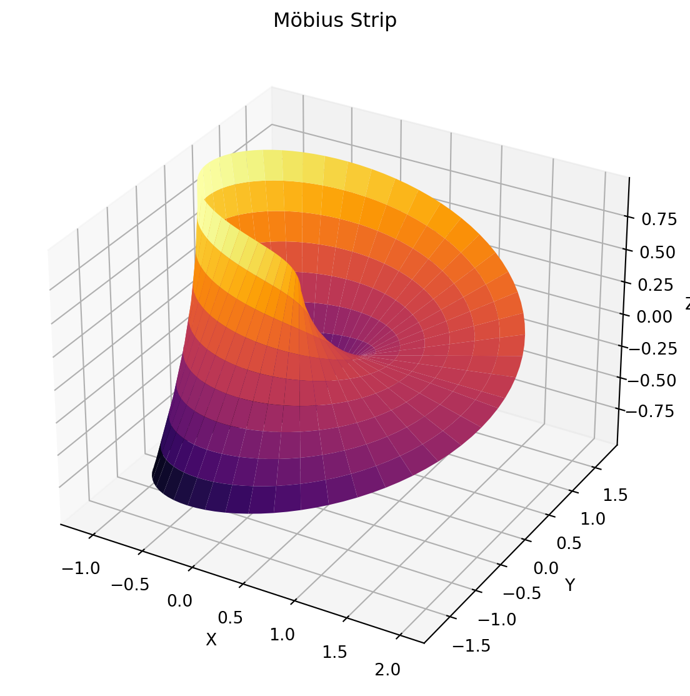
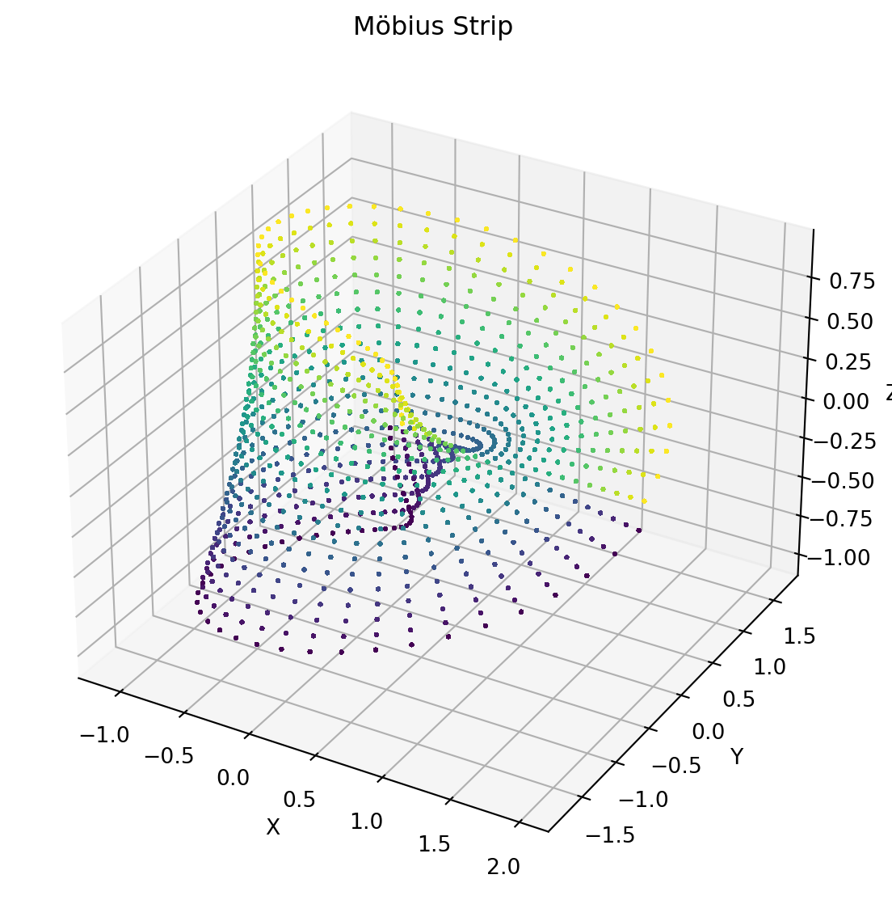
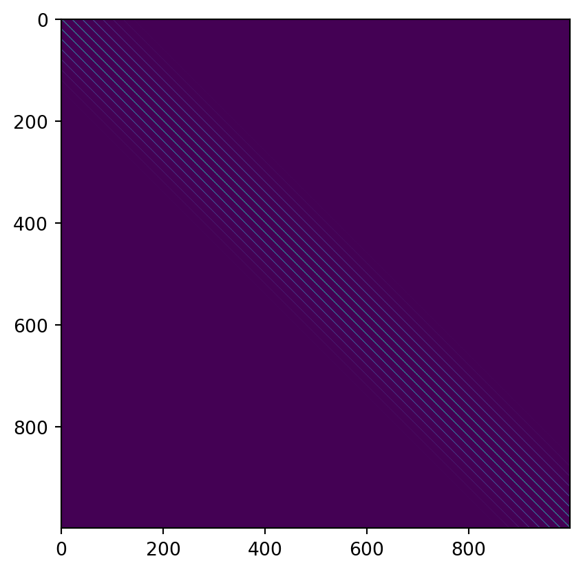
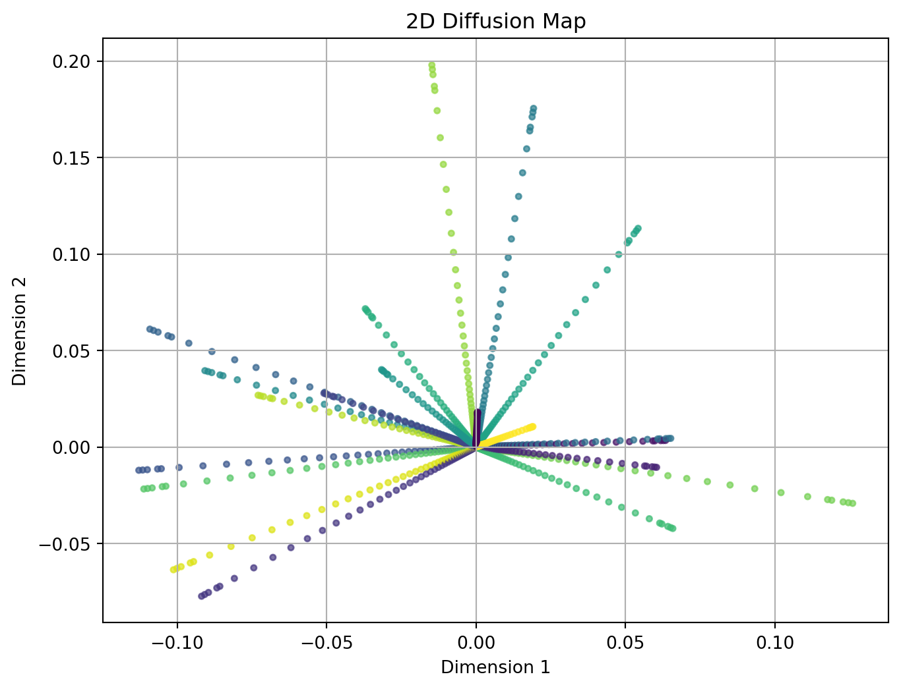
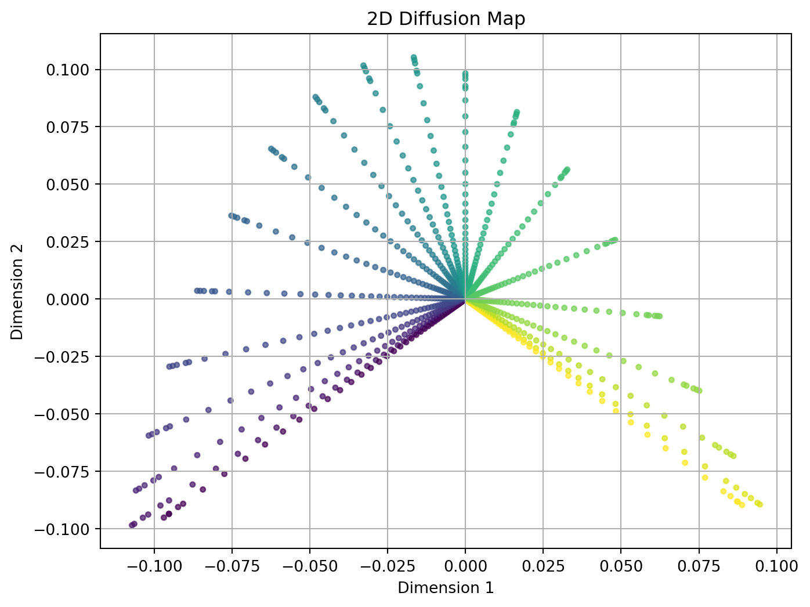

Shan Shan, Probabilistic Models on Fibre Bundles (https://dukespace.lib.duke.edu/server/api/core/bitstreams/21bc2e06-ee66-4331-83af-115fe9518e80/content)
Tingran Gao, The Diffusion Geometry of Fibre Bundles: Horizontal Diffusion Maps (https://arxiv.org/pdf/1602.02330)
Introduction
Horizontal Diffusion Maps are a variant of diffusion maps used in dimensionality reduction and data analysis. They focus on preserving the local structure of data points in a lower-dimensional space by leveraging diffusion processes. Here’s a simple overview:
Diffusion Maps Overview
Diffusion Maps: These are a powerful technique in machine learning and data analysis for reducing dimensionality and capturing intrinsic data structures. They are based on the concept of diffusion processes over a graph or data manifold.
Concept: Imagine a diffusion process where particles spread out over a data set according to some probability distribution. The diffusion map captures the way these particles spread and organizes the data into a lower-dimensional space that retains the local and global structure.
Horizontal Diffusion Maps
Purpose: Horizontal Diffusion Maps specifically aim to capture and visualize the horizontal or local structure of the data manifold. This can be particularly useful when you want to emphasize local relationships while reducing dimensionality.
Difference from Standard Diffusion Maps: While standard diffusion maps focus on capturing both local and global structures, horizontal diffusion maps emphasize local, horizontal connections among data points. This means they preserve local neighborhoods and horizontal relationships more explicitly.
Example: Möbius Strip
In this section, we show how horizontal diffusion map works on Möbius Strip parameterized by:
\[
x = (1 + v\cos(\frac{u}{2}))\cos(u),\quad y= (1 + v\cos(\frac{u}{2}))\sin(u),
\] for \(u\in [0,2\pi)\) and \(v \in [-1,1]\).
It is known as one of the most simple yet nontrivial fibre bundle. See below for a visualization:
import numpy as npimport matplotlib.pyplot as pltfrom mpl_toolkits.mplot3d import Axes3Ddef mobius_strip(u, v):""" Generate coordinates for a Möbius strip. Parameters: - u: Parameter that varies from 0 to 2*pi - v: Parameter that varies from -0.5 to 0.5 Returns: - x, y, z: Coordinates of the Möbius strip """# Parameters for the Möbius strip radius =1.0 width =1.0# Compute coordinates x = (radius + width * v * np.cos(u /2)) * np.cos(u) y = (radius + width * v * np.cos(u /2)) * np.sin(u) z = width * v * np.sin(u /2)return x, y, zdef plot_mobius_strip(): u = np.linspace(0, 2* np.pi, 100) v = np.linspace(-1, 1, 10) u, v = np.meshgrid(u, v) x, y, z = mobius_strip(u, v) fig = plt.figure(figsize=(10, 7)) ax = fig.add_subplot(111, projection='3d')# Plot the Möbius strip ax.plot_surface(x, y, z, cmap='inferno', edgecolor='none')# Set labels and title ax.set_xlabel('X') ax.set_ylabel('Y') ax.set_zlabel('Z') ax.set_title('Möbius Strip') plt.show()# Run the function to plot the Möbius stripplot_mobius_strip()

Now we generate samples from the surface uniformly by first sample \(N_{base}\) points on the `base manifold’, parameterized by the \(v\) component. Then we sample \(N_{fibre}\) points along each fibre:
N_fibre =20v = np.linspace(-1,1,N_fibre,endpoint=False) #samples on each fibreN_base =50u = np.linspace(0,2*np.pi,N_base,endpoint=False) #different objects# Here we concatenate all fibres to create the overall objectV = np.tile(v,len(u))U= np.array([num for num in u for _ inrange(len(v)) ])N = U.shape[0]
Here we visualize the points to see how they are distributed on the manifold:
u, v = np.meshgrid(U,V)x, y, z = mobius_strip(u, v)fig = plt.figure(figsize=(10, 7))ax = fig.add_subplot(111, projection='3d')# Plot the Möbius stripax.scatter(x, y, z, c=v, s=1)# Set labels and titleax.set_xlabel('X')ax.set_ylabel('Y')ax.set_zlabel('Z')ax.set_title('Möbius Strip')plt.show()

Later on, we will go over the horizontal diffusion map and apply it to the data we just created!
Horizontal diffusion map (HDM)
The first step is to create a kernel matrix. As outlined by the references, two common approaches are:
Horizontal diffusion kernel: For two data points \(e=(u,v)\) and \(e' = (u',v')\): \[
K_{\epsilon}(e, e') = \exp( -(u - u')^2/\epsilon) \text{ if }v' = P_{uu'}v,
\] and zero otherwise. Here \(P_{uu'}\) is the map which connects every point from \(v\) to its image \(v'\), which, for our case, maps \(v\) to itself.
def horizontal_diffusion_kernel(U,V,eps): N = U.shape[0] K = np.zeros((N,N))for i inrange(N):for j inrange(N):if V[i] == V[j]:# and U[i] != U[j]:#print('match') K[i,j] = np.exp(-(U[i]-U[j])**2/eps)return Keps =0.2K = horizontal_diffusion_kernel(U,V,0.2)plt.imshow(K)plt.show()

An alternative, soft version of the kernel above is the coupled diffusion kernel:
After we created the kernel matrix, we can then proceed with the regular diffusion map by (1) Create the diffusion operator by normalizing the kernel matrix and computing its eigendecomposition, and (2) extract the diffusion coordinates by using the eigenvectors corresponding to the largest eigenvalues (excluding the trivial eigenvalue) to form the diffusion coordinates.
import numpy as npimport matplotlib.pyplot as pltfrom scipy.linalg import eighfrom sklearn.preprocessing import normalizedef compute_diffusion_map(kernel_matrix, num_components=2):""" Compute the diffusion map from a kernel matrix. Parameters: - kernel_matrix: The kernel matrix (e.g., RBF kernel matrix). - num_components: Number of diffusion map dimensions to compute. Returns: - diffusion_coordinates: The 2D diffusion map coordinates. """# Compute the degree matrix degree_matrix = np.diag(np.sum(kernel_matrix, axis=1))# Compute the normalized Laplacian matrix laplacian = np.linalg.inv(degree_matrix) @ kernel_matrix# Compute eigenvalues and eigenvectors eigvals, eigvecs = eigh(laplacian)# Sort eigenvalues and eigenvectors sorted_indices = np.argsort(eigvals)[::-1] eigvals = eigvals[sorted_indices]#print(eigvals) eigvecs = eigvecs[:, sorted_indices]# Take the first `num_components` eigenvectors (excluding the first one which is trivial) diffusion_coordinates = eigvecs[:, 1:num_components+1] @ np.diag(np.sqrt(eigvals[1:num_components+1]))return diffusion_coordinatesdef plot_diffusion_map(diffusion_coordinates,color):""" Plot the 2D diffusion map. Parameters: - diffusion_coordinates: The 2D diffusion map coordinates. """ plt.figure(figsize=(8, 6)) plt.scatter(diffusion_coordinates[:, 0], diffusion_coordinates[:, 1], c=color, s=10, alpha=0.7) plt.title('2D Diffusion Map') plt.xlabel('Dimension 1') plt.ylabel('Dimension 2') plt.grid(True) plt.show()
Now project the data points into a lower-dimensional space defined by the significant diffusion coordinates. This projection helps in visualizing and analyzing the local structure of the data.
# Compute the diffusion mapeps =0.2K = horizontal_diffusion_kernel(U,V,eps)diffusion_coordinates = compute_diffusion_map( K, num_components=2)#print(diffusion_coordinates)# Plot the 2D diffusion map, where color represents where they were on the fibre. Points that are mapped plot_diffusion_map(diffusion_coordinates,V)

Similarly we perform the same procedure for the coupled diffusion matrix:
# Compute the diffusion mapeps =0.2delta =0.01K_c = coupled_diffusion_kernel(U,V,eps,delta)diffusion_coordinates = compute_diffusion_map( K_c, num_components=2)#print(diffusion_coordinates)# Plot the 2D diffusion mapplot_diffusion_map(diffusion_coordinates,V)#plot_diffusion_map(diffusion_coordinates,U)

The points are colored according to their correspondence on all the fibres through component \(v\). If two points correspond to each other across different but nearby fibres, they are likely to be neighbors in the visualization above.
Horizontal base diffusion map (HBDM)
In addition to embed all the data points, the framework also allows for embedding different objects (fibres). The new kernel is defined as the Frobenius norm of all entries in the previous kernel matrix that correspond to the two fibres:
The embedded points are colored according to the `ground truth’ \(u\). The smooth color transition shows that the embedding uncovers the information of all fibres on the base manifold.
Applications in shape data
The horizontal diffusion map framework is particularly useful in the two following espects, both demonstrated in Gao et al.:
Horizontal diffusion map (embedding all data points): The embedding automatically suggests a global registration for all fibres that respects a mutual similarity measure.
Horizontal base diffusion map (embedding all data objects/fibres): Compared to the classical diffusion map without correspondences, the horizontal base diffusion map is more robust to noises and often demonstrate a clearer pattern of clusters.